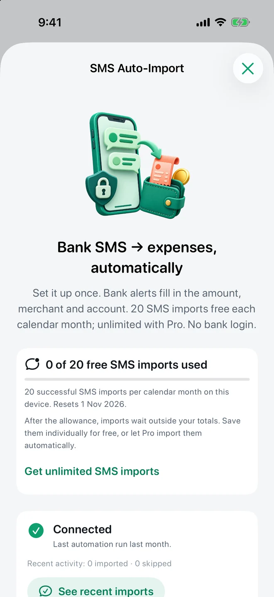
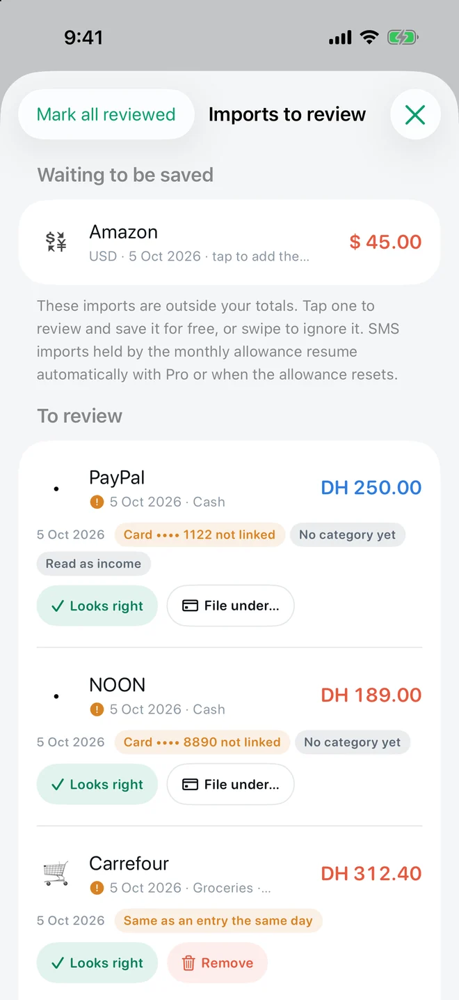

FEATURE · BANK SMS & EMAIL · 10 FREE A MONTH
Your bank texts you. Your ledger fills itself.
TrackExpenses turns bank SMS and email alerts into expenses and income using an iPhone Shortcuts automation, and reads any alert you paste. It picks out the amount, merchant, card, currency and date, skips one-time codes, declined payments and offers, and never needs your bank login or access to your inbox.


Real app screens with example records.
How it works
- Create a Message automation once. Choose wording from your bank’s actual alerts, then connect Shortcuts’ Message trigger to Import Bank Message. The complete iOS 27 and iOS 26 setup guide shows the right input variable for each version. More → SMS Auto-Import walks you through it with the real screens, step by step.
- Spend as usual. When the alert arrives, the action passes that one message to TrackExpenses. The app reads it, files it and keeps only what it read — never the message text.
- Glance at what needs a look. Anything uncertain is flagged on the Daily screen: a possible duplicate, a card it hasn’t linked yet, a foreign purchase waiting for a rate, money coming in.
Bank alerts by email
If your bank emails instead of texting, the same action can read those emails. Add the email account, such as Gmail, to Apple’s Mail app, because the Shortcuts Email trigger watches Mail and can’t see the Gmail app. Then create an Email automation filtered on a word that every alert subject contains, such as “transaction”, and hand the email to Import Bank Message. Filter on the subject, never the sender. Mail checks for new email on a schedule, so an alert can take a few minutes to arrive.
The app shows the steps for your iOS version under More → SMS Auto-Import → “Bank alerts by email?”, and the bank email alerts guide has every screen.
Or paste an alert
Many banks, especially in Latin America and Europe, notify through their own app rather than by SMS, and no iPhone automation can read another app’s notification. iOS doesn’t let you copy a notification’s text either, but an SMS, an email, or a transaction detail your bank’s app lets you copy can be pasted: tap Paste on the Transactions screen or choose Paste bank message from the app icon: the amount, shop and date are filled in, ready to check. Pasting is free, unlimited and doesn’t use the automatic allowance.
What it reads, and what it refuses
- Amount and currency — more than 110 currencies recognized, digits in Arabic, Persian, Devanagari and more.
- Merchant, the date printed in the message, and the card’s last digits: an alert that names a card lands on the account linked to it, pasted or imported.
- The category you used before for that shop, so a corrected Carrefour entry teaches every later one.
- Formats from banks and wallets in the Gulf, India and the rest of Asia, Africa, Europe, the US and Latin America, from Pix in Brazil to card purchases in Mexico and Colombia, in English, Arabic, Spanish, Portuguese and many other languages.
- ATM withdrawals, cash deposits and card bill payments can become transfers between your accounts instead of fake spending.
- A purchase abroad that your bank also states in your own currency imports at the amount you were charged.
- One-time codes, declined payments, fraud checks, payment requests, bills merely due and promotions are refused, not imported.
- Salary credits can be imported as income and flagged for review (a switch you control).
Want to check your bank first?
The setup screen has a “try one of your bank's messages” box: paste an alert and see exactly what would be imported, before the next real purchase. Setup also suggests a filter word your bank’s alerts really contain, such as the currency code, or “$” for a ledger in dollars.
Free or Pro
Free includes 10 successful automatic imports per calendar month on each device, SMS and email together. After that, new alerts are still caught and kept — amount, merchant and date — but appear locked, outside your totals; tapping one offers Pro. Upgrading adds them all to your ledger automatically and removes the limit. Otherwise, next calendar month’s allowance releases as many as it covers. Nothing is dropped, and entries already saved are never locked.
Questions
Does TrackExpenses read my Messages inbox?
No. iOS does not allow that. A Shortcuts automation that you create passes matching messages to the app one at a time.
Will it work with my bank?
It reads many real alert formats from banks across the Gulf, India, Asia, Africa, Europe, the US and Latin America, but not every format. Paste one of your alerts into the setup screen check to see the result before relying on it.
Can it read bank alerts that arrive by email?
Yes. Add the email account to Apple’s Mail app, then create a Shortcuts Email automation filtered on a word from the alert subject, with the Import Bank Message action. The app shows the steps under More, SMS Auto-Import, Bank alerts by email.
My bank only sends app notifications. What can I do?
No iPhone automation can read another app’s notification. If you can copy the alert text, paste it into TrackExpenses: the amount, shop and date fill in, and pasting is free. Many banks can also send SMS or email alerts, which an automation can log.
Why can Shortcuts show a notification?
Shortcuts may show a system notification depending on your iOS version and automation settings. Show When Run controls the import action’s own presentation. On iOS 27, check Automation is on, Confirm Before Run is off, and Allow Running When Locked is enabled.
What happens after 10 free imports?
Later alerts are kept but locked outside your totals. Upgrading to Pro adds them all automatically; otherwise the next calendar month’s allowance releases as many as it covers. Nothing is dropped, and saved history is never locked.
Your money, easier to follow.
Expense Tracker: SMS & Voice for iPhone, iPad and Mac.
5.0 on the App Store · 8 ratings across 5 countries · Checked 2026-11-20
App facts and free / Pro limits
Expense Tracker: SMS & Voice (TrackExpenses) is made by Mohamed Elatabany for iPhone and iPad with iOS/iPadOS 17 or later, and runs on Mac computers with Apple silicon. The app is in English, Arabic, German, Spanish and Brazilian Portuguese, with a full right-to-left Arabic interface. No app account or bank login is required. Optional Shortcuts automations import supported bank SMS, bank email alerts (through Apple’s Mail app) and Wallet purchases, and a bank SMS or email can be pasted; the app does not read your Messages inbox or your email. Voice entry creates on-device drafts on compatible devices and languages. The free ledger includes unlimited manual transactions, budgets, current-period budget moves and Cover with the total unchanged, days left and spent/left amounts, budget alerts (at 80% when ahead of pace, and when over), bill reminders the morning before a repeating expense is due, historical stats, search with Spent and Income totals across every period, private iCloud sync across iPhone, iPad and Mac, 3 accounts, 2 recurring rules, 10 saved voice entries per calendar month per device and 10 successful automatic bank SMS or email imports per calendar month per device. Touching and holding the app icon offers Say an expense, New expense, Paste bank message and Ask your coach. The money coach reads the last budget month and suggests one limit. Today’s spending, a category, account balances, any named month, charts, files and typed logging are worked out on the device without using a question; open questions go to Anthropic’s Claude through the developer’s relay only after the user agrees, with the conversation so far, a summary of this month and last month and, when the model asks, totals for up to 13 months or up to 20 purchases with their date, shop, category and amount; never notes, receipts, account names or numbers, or balances (10 a month free per device). SMS alerts past the free allowance are kept but locked outside totals; upgrading to Pro adds them all, otherwise the next calendar month’s allowance releases as many as it covers. Nothing is dropped and saved history is never locked; when Pro or a trial ends, entries, accounts and repeating bills keep working. Pro adds unlimited voice entry, SMS and email imports, accounts and recurring rules, money coach challenges and more coach questions, a salary plan, forecasts, overall and per-budget daily guidance with repeating bills accounted for first, a daily budget for chosen categories optionally up to a date, what-if planning, Export & Share (CSV of any range and the full JSON backup; every export is Pro since 1.15.0), CSV import, backup restore, themes and alternate icons. Monthly and annual subscriptions and a one-time lifetime purchase are available. Spending calculations depend on your records and are not financial advice.